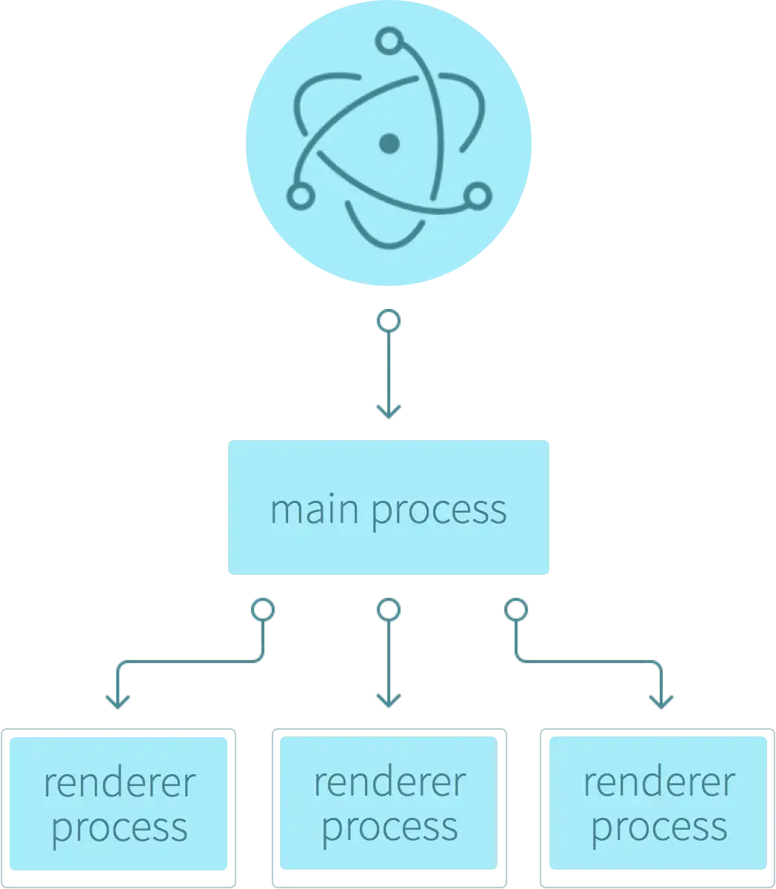
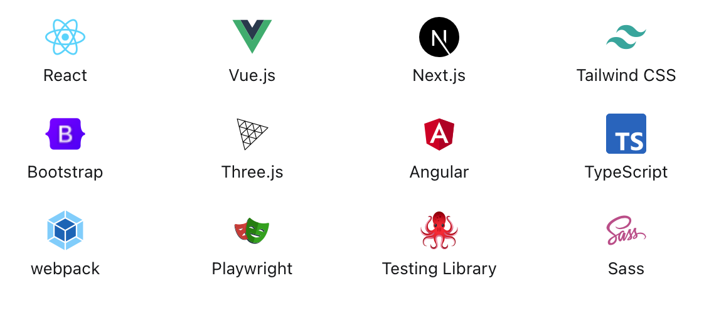
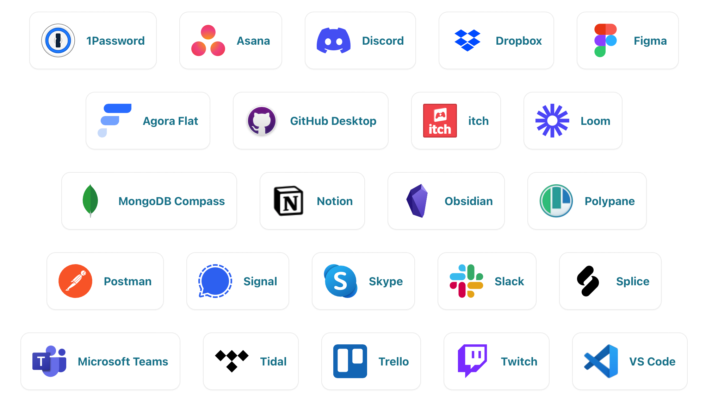
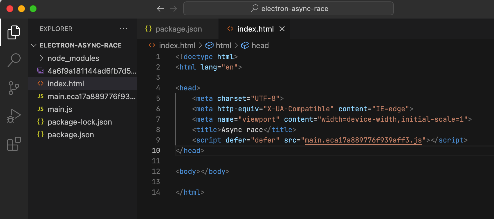
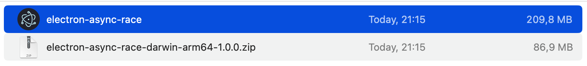

Electron
Stanislav Mamulin - 2023
JavaScript is everywhere
JavaScript is a programming language for a wide range of tasks:
- Frontend (the main programming language)
- Backend (Node.js, Deno, …)
- Mobile (ReactNative, NativeScripts, Ionic, …)
- IoT (JerryScript, QuickJS, …)
- Desktop (NW.js, Electron, Neutralinojs, …)
Why do we need desktop applications if there is an Internet?
Pros of Desktop apps
- No internet required to run and use the app
- No need to download anything to run
- Have access to computer resources
- Full control over the available features of the runtime
- Backend independence
Desktop app on JS
- Developing desktop apps is very difficult
- JavaScript couldn’t stay away :)
- Node.js comes to the rescue
- Main frameworks: NW.js and Electron
Electron
- HTML, CSS and JavaScript are the basis
- Share code between a desktop and a web applications
Features
- Web Technologies
- Cross Platform
- Native graphic user interface
- Automatic software updates
- Application installers
- App store distribution
- Crash reporting
Architecture
The main process
- Entry point for the entire application
- Create and manage content windows
- Manages the application life cycle
- Interacting with the user's operating system
The renderer process
- Display content
- One window - one render process
Tools
Apps using Electron
Practical part
Convert existing SPA into Desktop App
Install Electron framework
The main requirement is Node.js installed. Recommended last LTS version.-
Create a folder and initialise npm in it
mkdir electron-async-race cd electron-async-race npm init -
Install Electron as dev-dependency
npm install -D electron -
Add to package.json in the scripts section the line for start application:
"scripts": { "start": "electron .", },
Create the basis of the Electron application
-
Import the necessary modules:
const { app, BrowserWindow } = require(‘electron’) Create a function to load the HTML:
const createWindow = () => { const win = new BrowserWindow({ width: 600, height: 700 }) win.loadFile('index.html') } app.whenReady().then(() => { createWindow() })
Move Async race on Electron
Move Async race on Electron
Copy the Async race files from the Webpack build folder to the folder with the main.js file.
3 files: index.html, main.eca17...js, 4a6f...png
Move Async race on Electron
Start the app
npm start
Move Async race on Electron
Start the app
npm start
Create an executable file for our races
To do this, we will use Electron Forge
npm i -D @electron-forge/cli
npx electron-forge import
npm run make

The size of the distribution kit turned out to be almost 210 Mbytes, the original size of HTML + CSS + JS is 65 Kbytes.
Pros and cons of Electron
Pros and Cons of Electron
Pros:
- Ability to use familiar web technology stack to develop Desktop apps
Pros and Cons of Electron
Cons:
- Requires a lot of resources
- Not cross platform build